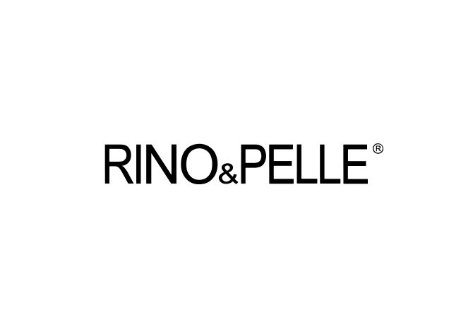

Ottografie
About Otto van Toorn
I love strong aesthetics to make reality more powerful and beautiful.
Starting out as a dj and music composer, Otto van den Toorn spent much of his time alone in his studio. After 15 years the secluded studio life ran its course and he sought out for a new interest, and began taking photos of his friends in the modeling industry. This new creative outlet kept Otto busy for years, but in 2008 his photography career propelled to the next level when he was asked to host the Net5 television show “Model in a Day” with fellow photographer, Lutske Veenstra.

After buying himself a camera he started looking at life through a lens. Besides striving to make beautiful pictures, he loves to connect with the people he works with.
Otto loved working and connecting with people on the show, and he quickly established himself as full-time fashion and beauty photographer. Currently, his assignments are primarily fashion and beauty focused. Over the last 10 years he has photographed campaigns for brands such as Nikkie, Ibana, JoshV, Tramontana, MiMoneda, Lookx, Inglot, Josephine&CO, Silvercreek and several magazine's such as Talkies, Life After Football, FYI, Stylevision, and many more.
Partners
I’m very grateful for the opportunity to collaborate with such beautiful agencies and brands.
- 